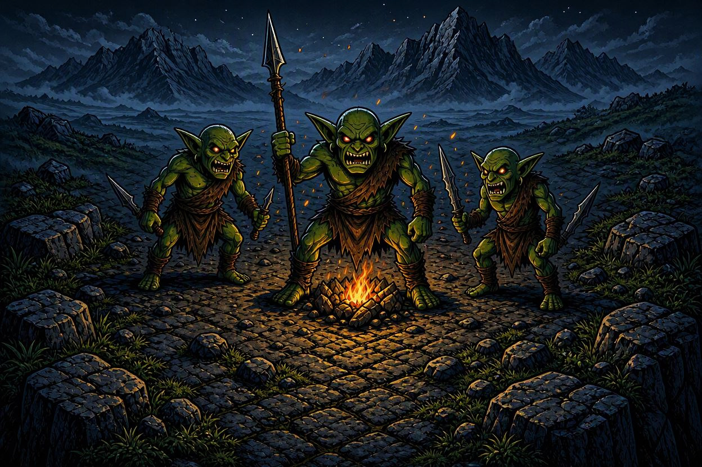

Chapter III - The Goblin's Camp

The mountain pass narrows as you climb higher into the Shadowpeak range. The air grows thin and cold. Jagged rocks loom on either side, and the wind howls like a banshee through the gaps.
Then you hear it — the unmistakable sound of goblin voices. Crude laughter and the crackle of a campfire echo from ahead. You creep closer and peer around a boulder.
A camp. At least a dozen goblins — twisted, green-skinned creatures loyal to the Superlord — have made their camp right in the middle of the only pass through the mountains. They're feasting on stolen livestock, their crude weapons piled beside them. A crude banner bearing the Superlord's sigil — a purple eye — flutters above their camp.
There's no way around them. The cliffs on either side are too steep to climb. You must deal with these creatures — one way or another.
How do you handle the goblins?